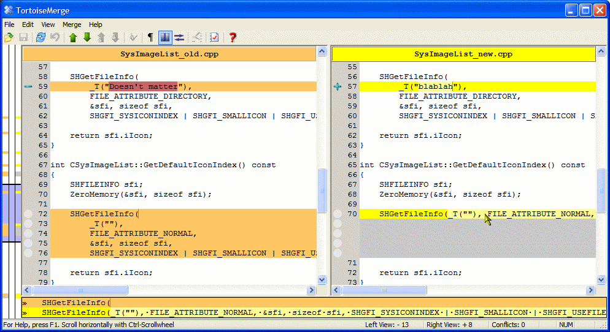
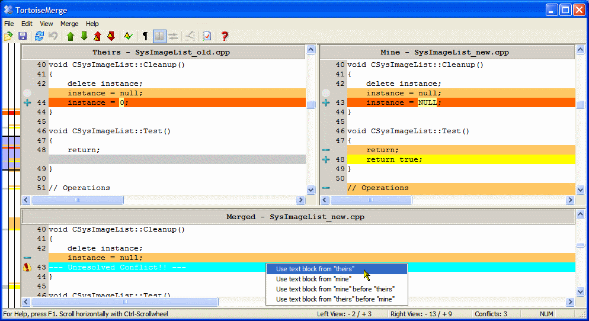

Version control is all about having the history of your working progress. But to really see and check the history, you must be able to see and check what has changed between two points in time, for example what has changed between two releases of your product, or what was changed to fix a bug, or ...
At least for files which consist of text, TortoiseMerge can help you here. It shows you the two versions of a file side-by-side, coloring every modified line in that file.
You can see in that screenshot that TortoiseMerge also colors the changes inside modified lines so you can see immediately what exactly has changed.
When you reformat your code or text, sometimes you don't really change anything but only split a long line into multiple ones, or you merge multiple lines into one. TortoiseMerge marks such changes with a white circle on the left gray bar of each view. If you see such a white circle, you know that no real changes were made, only changes in whitespaces.
At the bottom of the window, there is a view showing the two lines your mouse pointer is currently hovering over. It always shows whitespace characters with special chars, and of course it's very handy if you have long lines because that view has the double width than the normal views.
But that's not all TortoiseMerge is able to do for you. It can also help you resolve a conflict by showing you your file, the file which has been modified by someone else and the file as it was before any of you have modified it, in its original state. Then you can easily see where the changes made conflict, and you can choose how to resolve that conflict.
When you're working on a project and other people have access to your sourcecode, but not necessarily have the rights to commit changes to the repository, you sometimes get a patch file with a bug fix or an enhancement. TortoiseMerge helps here too, because it can apply those patchfiles for you.
On the left is a small window containing all files which the patchfile wants to modify. A doubleclick on those file entries opens the file to be patched on the left, and the file how it looks like after the patch is applied on the right side.
To approve the patch, saving the file is enough.